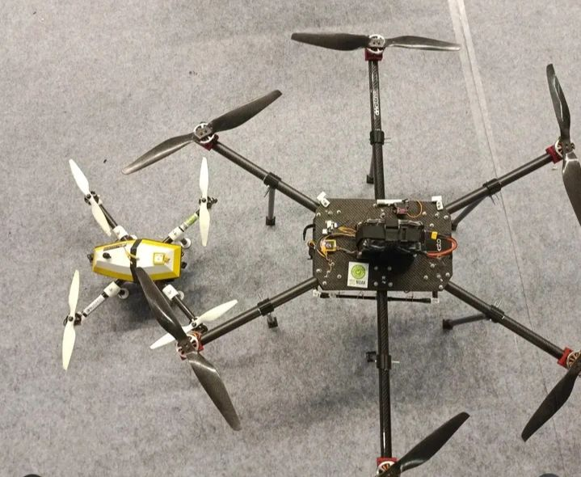
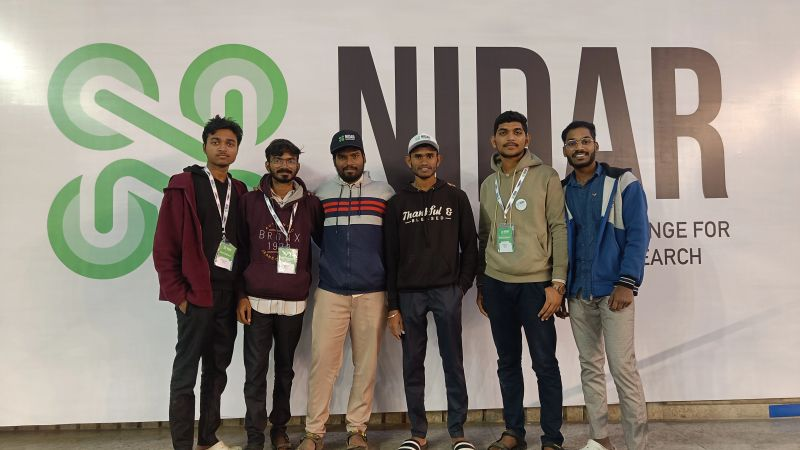
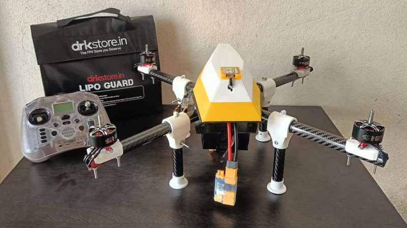
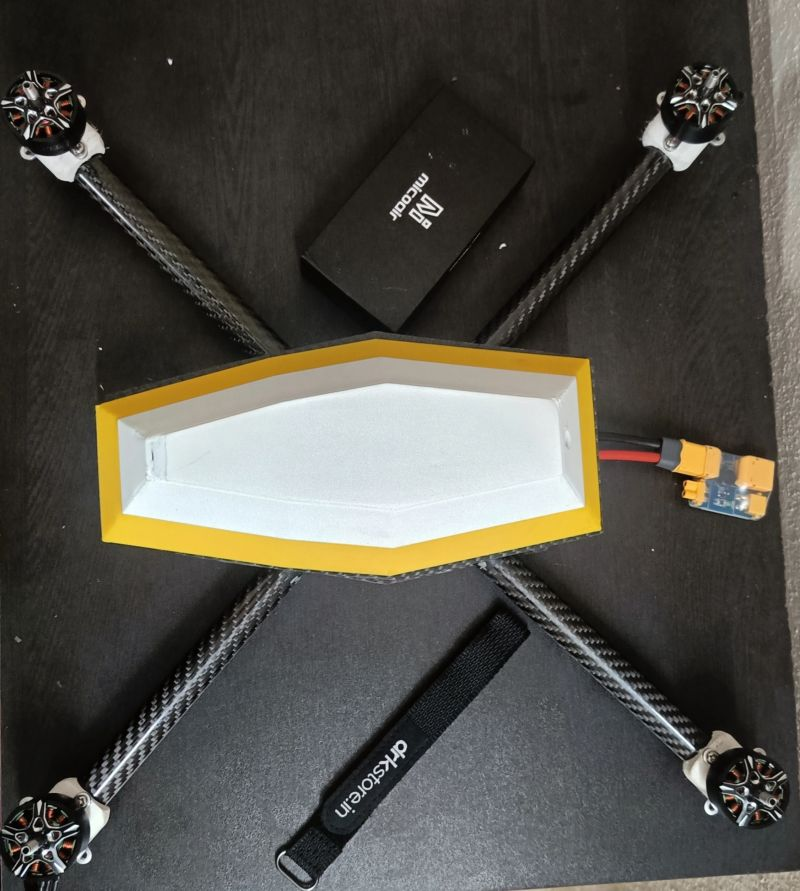
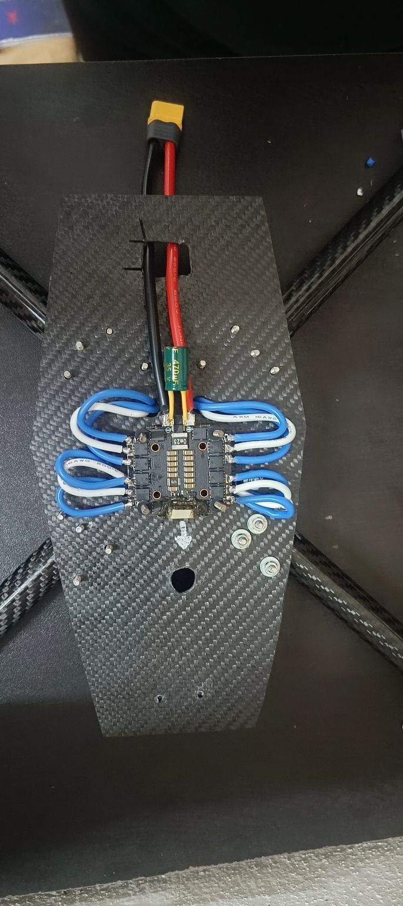
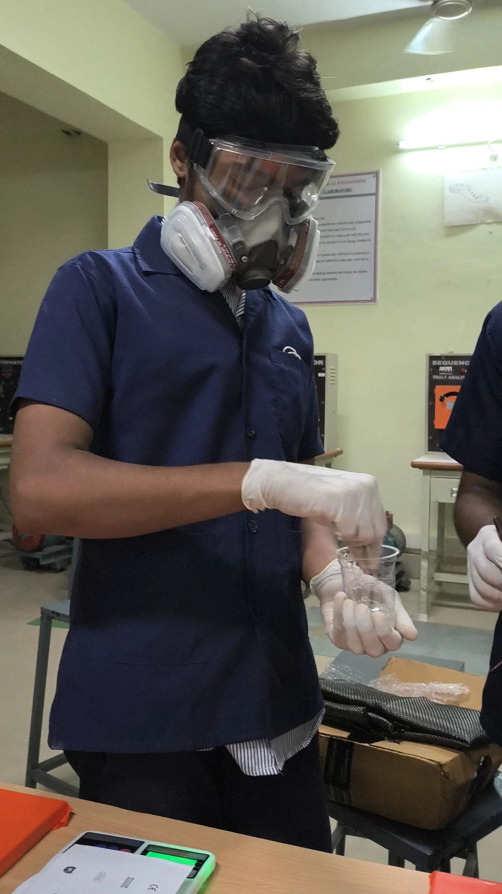
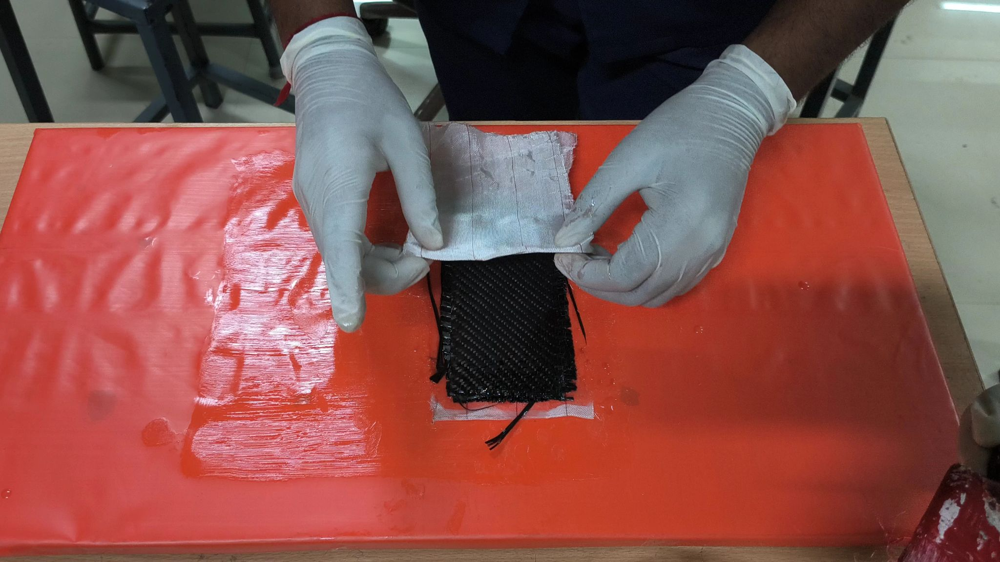

NIDAR Scout & Cargo
Project Overview
Under the Drone Federation of India (DFI) and targeting the SAEINDIA Aerothon rotorcraft design competition, I engineered and fabricated two distinct UAV platforms: a long-endurance Scout Drone optimized for tactical surveillance, and a high-payload Cargo Drone designed to transport a 2 kg utility payload. My primary challenge was minimizing structural weight while maintaining structural integrity to maximize aerodynamic efficiency and battery range.
Airframe Design & Composite Sizing
I designed the multirotor structures in SolidWorks, utilizing custom-machined 1.5mm carbon fiber composite plates for the main core plate and structural arm brackets. I selected carbon fiber sandwich panels to achieve high torsional rigidity and vibration damping.
To determine the motor-propeller configuration, I performed systematic flight physics calculations. I plotted and analyzed three crucial performance curves: Weight vs. Flight Time, Weight vs. Thrust, and Motor Current vs. Thrust. This calibration allowed me to match motor torque characteristics to lightweight carbon fiber propellers, guaranteeing a robust 2:1 thrust-to-weight safety margin for the Cargo drone under full load.
Avionics & Autonomous Navigation
For flight control, I integrated a Pixhawk autopilot running custom ArduCopter firmware, coupled with a Raspberry Pi companion computer for higher-level onboard script processing. I configured wireless telemetry and high-frequency FPV video links to provide real-time status and sensor readouts to the ground station.
I mapped and tested autonomous waypoint missions in ArduPilot Mission Planner, including automated take-off, trajectory following, payload drop activation via servo linkages, and home-return. The Scout Drone achieved a verified flight endurance of 45 minutes through systematic weight optimization.
Key Deliverables & Achievements
- Engineered a Scout Drone (45 min endurance) and a Cargo Drone (2 kg capacity) under DFI.
- Conducted mathematical propulsion analysis, plotting motor current and thrust characteristics for propeller sizing.
- Configured telemetry, GPS, and Raspberry Pi companion integration for FPV video streaming and waypoint flight plans.






